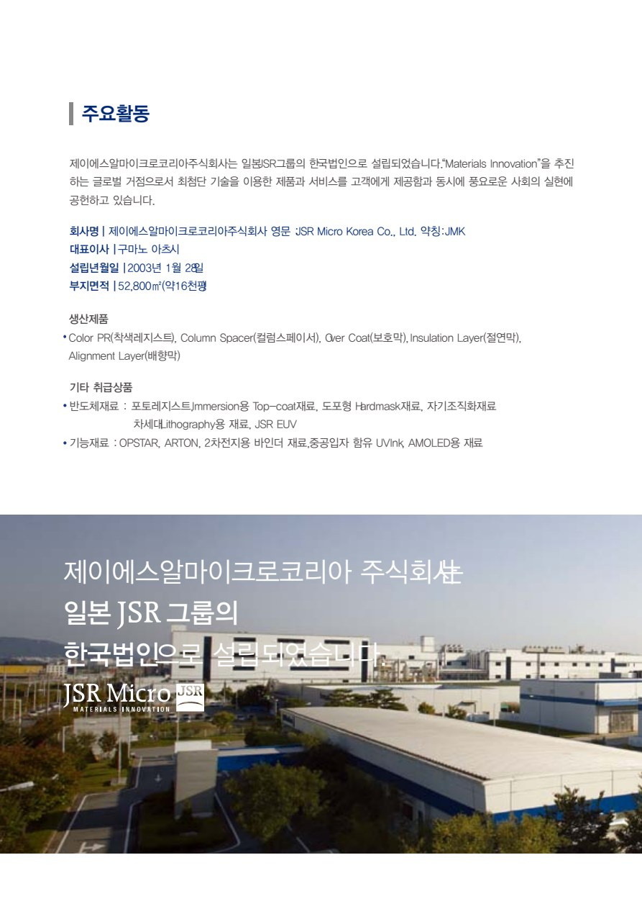
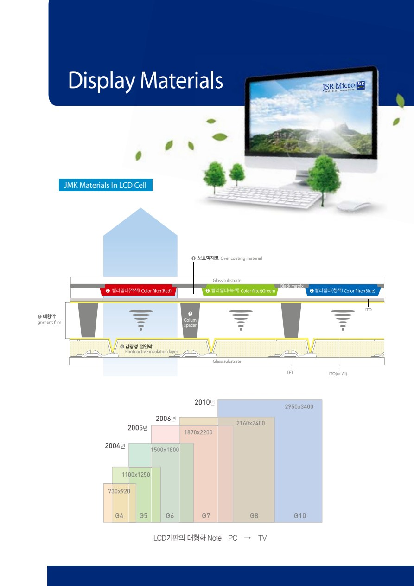
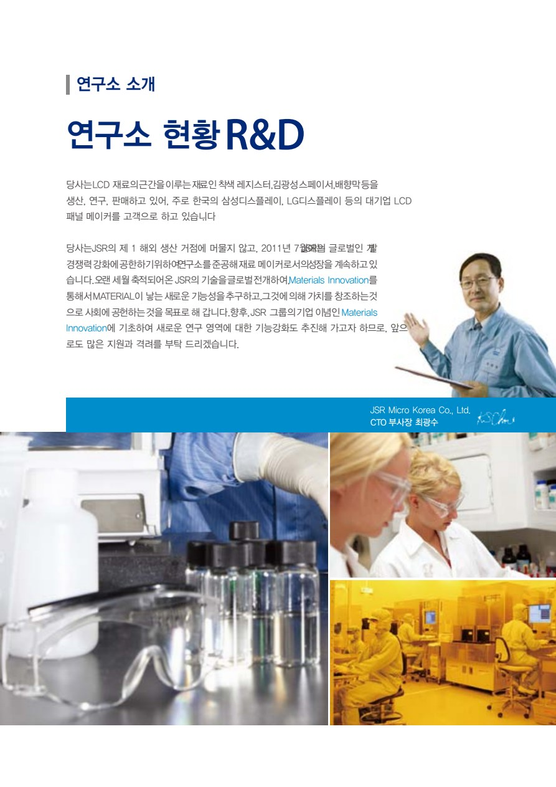

디스플레이 소재
LCD 컬러필터와 셀 구조에 적용되는 착색 레지스트, 컬럼 스페이서, 보호막, 절연막, 배향막 소재입니다.
제품 보기MATERIALS INNOVATION JSR MICRO KOREA
JSR Micro Korea는 디스플레이 소재의 제조·판매와 연구개발을 통해 차세대 기술을 위한 소재 혁신을 추구합니다.
ABOUT JSR MICRO KOREA
JSR Micro Korea는 JSR주식회사가 100% 출자하여 2003년에 설립한 한국 법인입니다.
브로셔는 JSR Micro Korea를 디스플레이 소재의 생산·연구·판매 거점으로 소개합니다. 축적된 소재 기술과 연구개발을 바탕으로 고객이 신뢰할 수 있는 제품과 기술서비스를 제공하고자 합니다.
※ 브로셔 수록 정보 기준. 현재 정보는 확인이 필요합니다.

BUSINESS AREA
브로셔에 소개된 소재 포트폴리오를 사업 영역별로 구성했습니다.
LCD 컬러필터와 셀 구조에 적용되는 착색 레지스트, 컬럼 스페이서, 보호막, 절연막, 배향막 소재입니다.
제품 보기포토레지스트, Topcoat, Hard Mask, EUV, DSA, CMP 등 브로셔에 수록된 JSR 반도체 소재 기술입니다.
브로셔 수록 기술ARTON, OPSTAR, 2차전지용 바인더와 중공입자 함유 UV Ink 등 브로셔에 수록된 기능성 소재입니다.
현재 취급 범위 확인 필요PRODUCTS & TECHNOLOGY
LCD 패널의 구조와 제조 공정에 적용되는 JMK 생산제품으로 브로셔에 명시된 소재입니다.

JMK Materials in LCD CellColor Resist · OPTMER CR Series
LCD 컬러필터의 RGB 형성용 감광성 소재OPTMER NN Series
LCD 셀 간격을 일정하게 유지하는 감광성 소재Over Coat · OPTMER SS Series
컬러필터 보호와 표면 평탄화를 위한 코팅 소재OPTMER PC Series
패널 내 유기 절연층 형성을 위한 감광성 소재OPTMER AL Series
액정 분자의 배열 방향을 제어하는 소재반도체·기능성 소재는 브로셔에 JSR 소재 포트폴리오로 소개되어 있으나, 2016년 전자재료 수입·판매 사업부문 양도 이후 JSR Micro Korea의 현재 생산·판매 범위는 확인이 필요합니다.

TECHNOLOGY CAPABILITY
JMK 연구소는 LCD 소재와 차세대 디스플레이용 소재를 개발하며, JSR의 디스플레이 연구소와 공동 연구개발 과제를 수행한다고 브로셔에 소개되어 있습니다.
소재 연구개발Color Resist, Spacer, Over Coat, 절연막, 배향막
글로벌 연구 협력JSR 연구소와의 공동 연구 및 연구 교류
생산 기반청주 본사·공장을 기반으로 한 디스플레이 소재 생산
CONTACT
브로셔에 기재된 본사·공장 연락처입니다. 주소와 연락처의 현재 유효 여부는 확인이 필요합니다.
충청북도 청주시 흥덕구 옥산면 과학산업4로 97
043-219-3396
브로셔 내 확인되지 않음